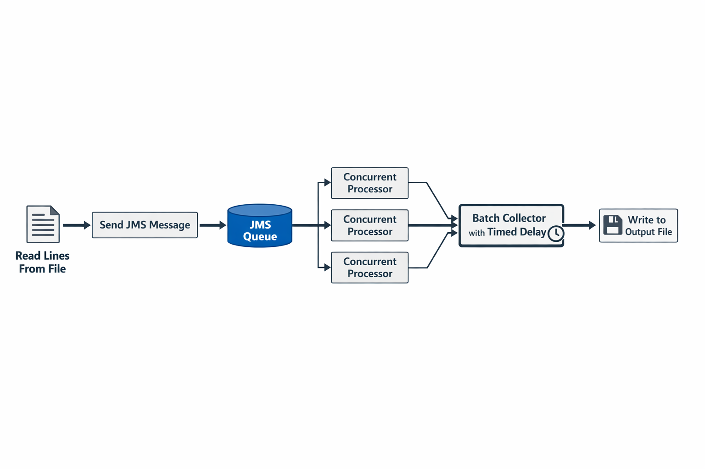

The Craft of Performance Tuning

Performance is not just about speed it is about flow, concurrency, and knowing when to wait. Traditional systems process tasks one at a time, but modern systems distribute work using queues and parallel processing.
The Craftsman Story
In a quiet workshop, a craftsman was given a massive ledger thousands of lines that needed processing. Others approached it sequentially: read, process, write. It worked, but it took hours.
The craftsman saw something different. Instead of treating the work as a single task, he turned it into a flowing system:
- Messages placed into a queue
- Multiple workers processing in parallel
- A collector batching results before writing
What once took hours was completed in minutes. The tools didn’t change the flow did.